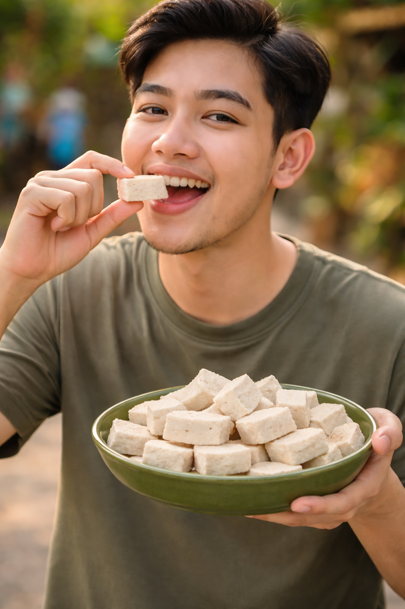
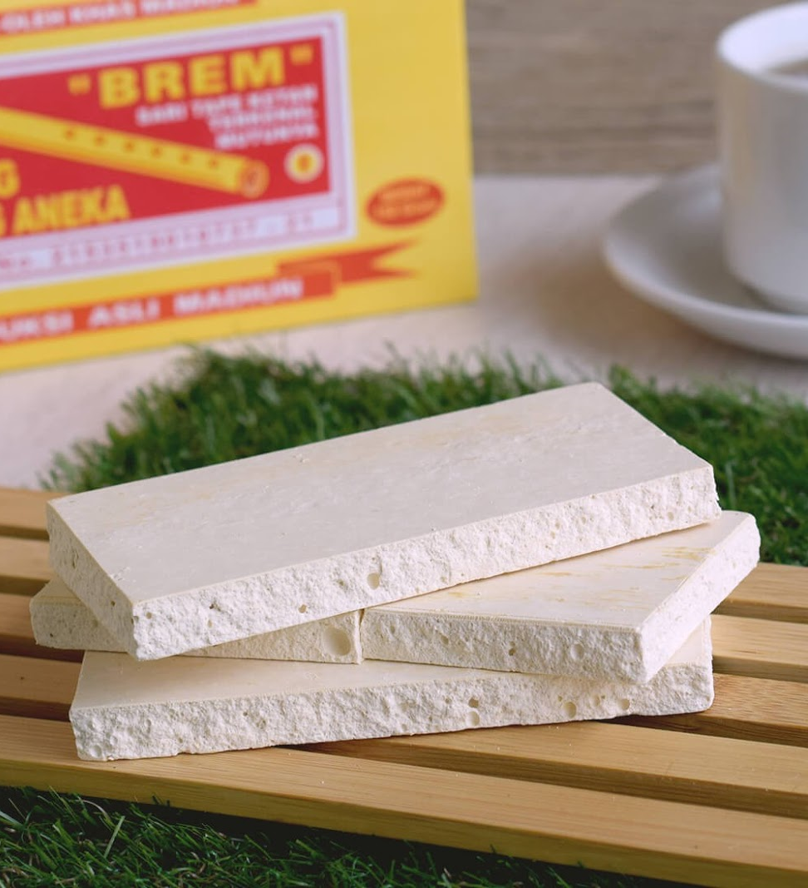

Brem adalah makanan tradisional hasil fermentasi sari ketan (biasanya ketan putih) yang dikeringkan, populer sebagai oleh-oleh khas Madiun dan Wonogiri. Berbentuk padat, berwarna putih kekuningan, rasanya manis-asam, dan memberikan sensasi dingin serta langsung meleleh di lidah.
Learn more
Proyek ini bertujuan untuk mempelajari bioteknologi konvensional melalui pembuatan brem padat. Brem dibuat dengan memanfaatkan proses fermentasi yang melibatkan mikroorganisme dari ragi. Dalam proyek ini dilakukan beberapa tahap seperti fermentasi bahan dan pengeringan hingga menghasilkan brem padat. Melalui proyek ini dapat dipahami bagaimana proses fermentasi dimanfaatkan untuk menghasilkan produk makanan yang bermanfaat.
Langkah-langkah:
